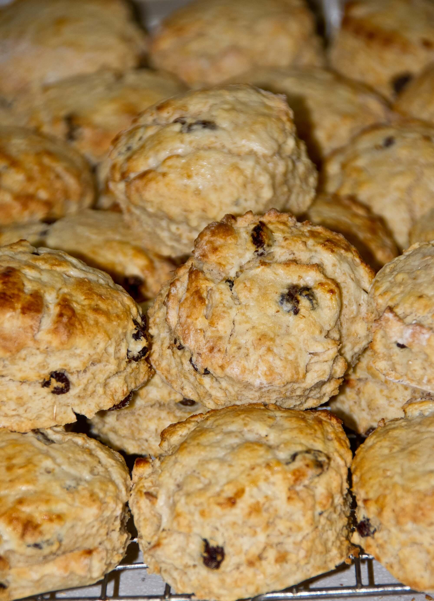

Flour Shower Patisserie
Flour Shower Patisserie
Flour Shower Patisserie grew out of a passion for baking, experimenting with different ingrediants to produce diffrent outcomes and spending time with loved ones. We created the recipes to be suitable for anyone at beginer level, including children and adults. Every week, we will feature a new, simple recipe on our website. Just by clicking the recipe link or scrolling down to the recipe section, you will get started baking. You will descover a list of everything you will need that is the ingrediants and tools needed as well as a step by step method instructions and a tutorial video. To recieve our weekly recipes as well as past recipes, sign up to our weekly news letter. You will also have accesss to a variety of recomamndations to help you have your own home bakery. To conatact us, visit our social media platforms linked at the bottom of the page.
